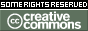

Reconn
The things I write on this wiki are covered by a Creative Commons [license].
You can contact me at reconn@digitalgunfire.com. I use [Popfile] to filter my spam.
Stop by my Reconn/Developer Journal.

Attribution-NonCommercial-ShareAlike |
Wormbo: Welcome to the Wiki. Please add yourself to the Project Contributors list if you didn't already do that.
G-LiTe:: Just wondering, is it actually possible to license stuff on this wiki? This license ofcourse wouldn't be a problem, it doesn't require anything from our side (it requires him to put himself on the Project Contributors list though  ). But still, isn't the wiki already owned by Tarq, Mych or the BU team?
). But still, isn't the wiki already owned by Tarq, Mych or the BU team?
Mychaeel: If anything is owned here at all it's the scripts backing the site, nothing more. The content that has been added by Wiki contributors is and remains their property, but it has been added under the assumption of the Open Content license as detailed on Project Copyright and Project Copyright/Discussion.